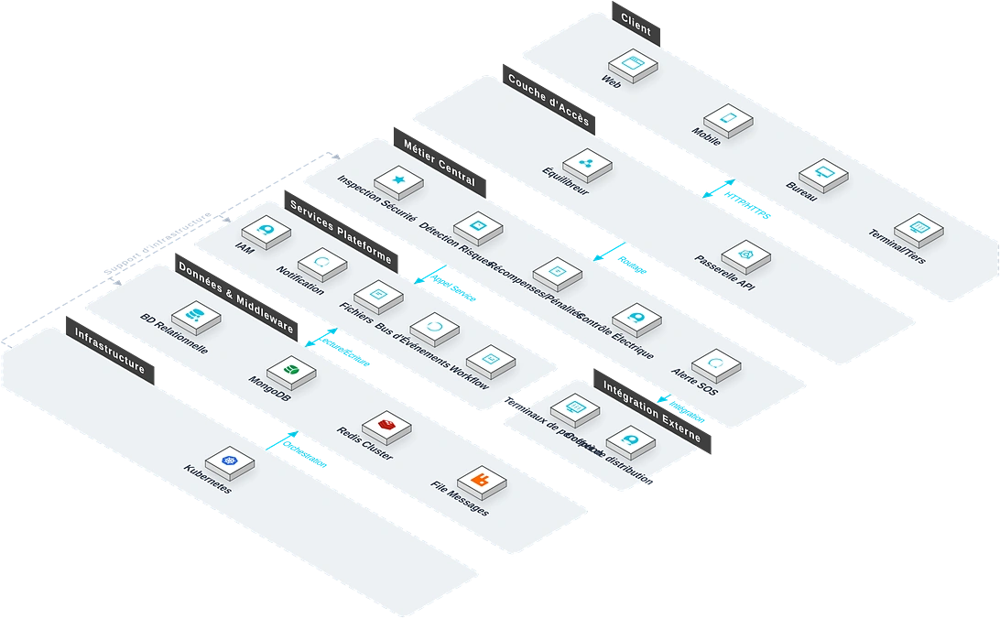

Le Système de Gestion de la Sécurité est une plateforme complète pour la sécurité des chantiers de génie civil. Face aux environnements complexes, aux risques élevés et à la difficulté d'identifier et de contrôler systématiquement les risques sous une gestion traditionnelle, le système couvre les inspections quotidiennes, l'enregistrement et le suivi des rectifications, le contrôle électrique temporaire et la réponse d'urgence SOS. Avec le support des langues autochtones d'Afrique de l'Ouest (haoussa, yoruba), il réalise l'identification des risques, la rectification des dangers et la réponse d'urgence, helping les entreprises à réduire les accidents.

Caractéristiques Clés
Le système couvre inspection, récompenses/sanctions, bons de travail électriques et SOS — quatre modules formant une gestion en boucle fermée.
Inspection Sécurité
Planification et exécution d'inspections quotidiennes ou spéciales avec enregistrement des dangers, photos, affectation de rectification et vérification.
Récompenses/Sanctions
Enregistrement des sanctions pour infractions ou des récompenses pour équipes et individus exemplaires.
Bons Électriques
Gestion de bout en bout des demandes d'électricité temporaire : demande, approbation, exécution et réception.
SOS
Fonction d'appel d'urgence rapide pour les situations urgentes.
Architecture du Système

Safety Closed Loop
Architecture sécurité en boucle fermée : inspection → enregistrement danger → affectation rectification → vérification. Combinée à la détection IA par caméras (casquesons, gilets réfléchissants, intrusion en zone dangereuse) et à l'intégration du contrôle d'accès et de la vidéosurveillance, le système construit une protection multi-couches.
Scénarios d'Application
Adapté à la boucle fermée d'inspection quotidienne, au contrôle électrique temporaire, à l'incitation par récompense/sanction et à la réponse d'urgence SOS.

Inspection Quotidienne
Planification et exécution d'inspections quotidiennes ou spéciales avec enregistrement des dangers, photos et vérification des rectifications.

Contrôle Électrique
Gestion de bout en bout des demandes d'électricité temporaire : demande, approbation, exécution et réception.

Incitation Sécurité
Sanctions pour infractions et récompenses pour équipes exemplaires, construisant une culture sécurité positive.

SOS d'Urgence
Appel d'urgence rapide pour les situations urgentes avec réponse liée.
Avantages et cas
Adaptation à la conformité locale
Adaptée aux exigences des réglementations de sécurité locales du Nigeria, génère des rapports de conformité pour répondre aux besoins de la supervision et réduire les risques juridiques.
Reconnaissance intelligente IA
Combiné à des caméras IA, il réalise la reconnaissance en temps réel et l'alerte automatique pour le non-port de casque de sécurité, le non-port de gilet réfléchissant et l'intrusion dans des zones dangereuses, la détection des risques passe du mode passif au mode actif.
Accès multilingue sans obstacle
Prise en charge du chinois, de l'anglais, du français et des langues ethniques locales comme le haoussa et le yoruba, garantissant une utilisation sans obstacle du système par les employés locaux.
Boucle fermée de réponse d'urgence
La demande d'aide rapide SOS et le processus de réponse d'urgence sont reliés sans couture, réduisant le temps de traitement des événements imprévus et garantissant la sécurité du personnel sur site.
Suivi de la correction des risques
Boucle fermée sur l'ensemble du processus des risques de sécurité, depuis l'enregistrement, la classification, la notification, la correction jusqu'à l'acceptation, avec une responsabilité attribuée à chaque personne et un délai imparti.
Standardisation de l'inspection périodique quotidienne
Prise en charge de la configuration de plans d'inspection selon les zones à risque, la prise de photos sur site, la signature et la notation sont réalisées en une seule étape, la gestion de la sécurité est standardisée.
Étude des besoins
Compréhension approfondie des besoins de gestion de la sécurité du chantier et des processus existants, tri des zones à risque, des itinéraires d'inspection et des mécanismes de réponse d'urgence.
Déploiement du système
Prise en charge du déploiement local et du déploiement cloud, combiné à des caméras IA pour réaliser la reconnaissance intelligente, adaptée à l'environnement de construction sur site.
Formation et mise en ligne
Formation hiérarchisée pour les administrateurs, les agents de sécurité et le personnel sur site, couvrant l'enregistrement des risques, le remplissage des rapports d'inspection, le traitement des alertes et l'utilisation des rapports.
Acceptation de mise en service
Acceptation en trois phases : test selon le processus de sécurité, vérification de la reconnaissance IA, intégration des alertes, pour garantir la stabilité du système avant la livraison officielle.
Gestion de la sécurité des projets de transport ferroviaire
Contexte : Les projets de transport ferroviaire impliquent des scénarios de travail à haut risque tels que les fouilles en profondeur, le tunneling au bouclier et les viaducs, la pression sur la gestion de la sécurité est importante.
Défis : L'environnement du chantier est complexe, l'inspection manuelle traditionnelle est difficile à couvrir l'ensemble du site, la détection des risques de sécurité est en retard, la chaîne de réponse d'urgence est longue.
Solution : Déployer un système de gestion de la sécurité, grâce à l'inspection périodique quotidienne, la boucle fermée de correction des risques et la reconnaissance intelligente IA, réaliser la détection active des risques et une réponse rapide.
Données de résultat : Amélioration de la rapidité de détection des risques de sécurité, réduction efficace du taux d'accidents, réduction du temps de réponse d'urgence.
Témoignage client : ——